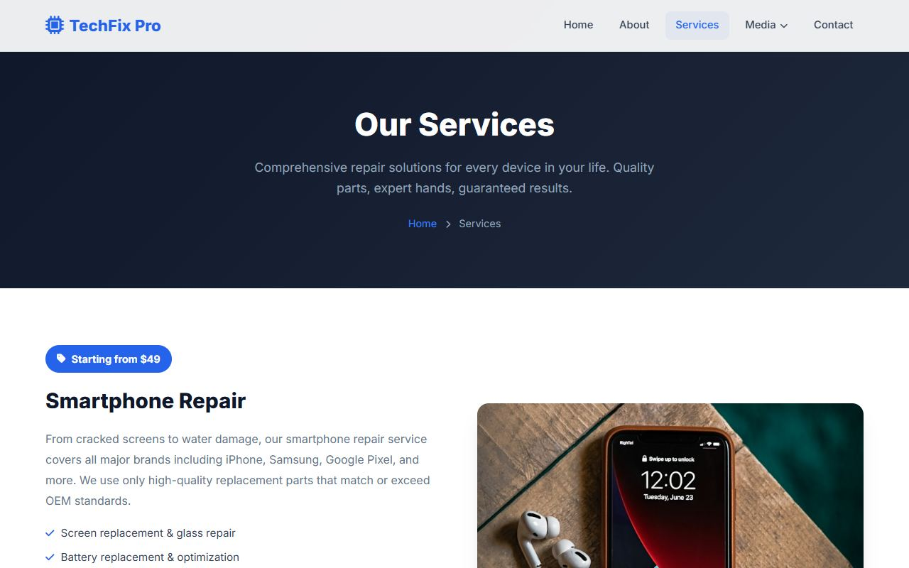
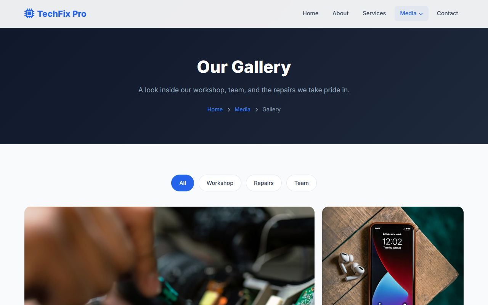
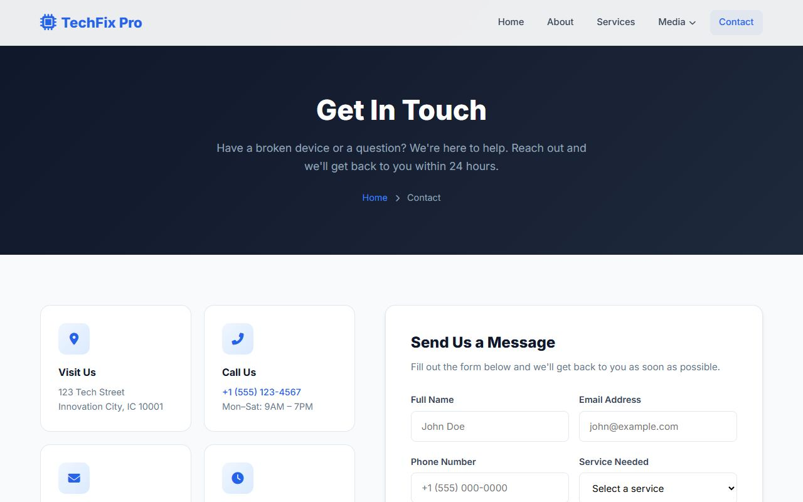

A complete beginner's course · HTML & CSS only
Build the TechFix Pro website from scratch
You have never written a line of code? Perfect. This guide takes you from installing your first code editor all the way to a finished, six-page, mobile-friendly business website — one small step at a time.
What you will build
By the end of this guide you will have rebuilt every page of the TechFix Pro electronic-repair website. Click a page to jump to the lesson that builds it.




How this guide is organised
There are 22 numbered lessons in four parts. Do them in order — every lesson builds on the one before it. Plan on roughly 15–20 hours in total, but go at your own pace.
Part 1 · Getting Started
Part 2 · Shared Styles & Layout
Part 3 · Building the Pages
Part 4 · Polish, Publish & Submit
- Images & project organisation
- Troubleshooting guide
- Exercises & final checklist
- Publish on GitHub & submit in Google Classroom
Plus a glossary of every new word.
How to use each lesson
Every lesson follows the same pattern, so you always know what to do next:
- Read the goals at the top so you know where you are heading.
- Follow the numbered steps in order. Each step tells you which file to open, where in the file to type, and what to type.
- Save and look in your browser after every step. Compare with the screenshot.
- Tick the checkpoint boxes. If something does not match, fix it before moving on — the troubleshooting guide will help.
- Publish and submit when every page is done: Lesson 22 shows you how to put your site online with GitHub Pages and hand in the link through Google Classroom.
Look out for these coloured boxes:
Tip
A helpful shortcut or good habit.
New term
A new word explained in plain English.
Common mistake
Something beginners often get wrong — and how to avoid it.
Careful
Read this before you continue.
Code you need to type appears in dark boxes like this one. The bar at the top always tells you the file name and where the code goes:
<body>”<h1>Hello!</h1>Type it, don't paste it
You can copy code from this guide (select it and press Ctrl + C, or Cmd + C on a Mac). But you will learn much faster if you type the shorter examples yourself. Your fingers remember things your eyes skip over.
About this version of TechFix Pro
The original TechFix Pro website uses a little JavaScript — a programming language — for a few interactive features. This course teaches only HTML and CSS, so each of those features is rebuilt with a clever HTML or CSS technique instead. The finished site looks and behaves almost exactly the same.
| Feature | Original site (JavaScript) | This guide (HTML & CSS only) | Lesson |
|---|---|---|---|
| Fade-in animations | Elements fade in as you scroll | Elements fade in when the page loads, using CSS @keyframes | 9 |
| Mobile menu button | Click handler toggles the menu | A hidden checkbox + <label> and the :checked selector | 9 |
| “Media” dropdown on phones | Tap to open | Always shown (indented) inside the mobile menu | 9 |
| Navbar shadow on scroll | Added after scrolling 30px | Not included (needs JavaScript) | — |
| Gallery filter buttons | Click handler hides photos | Hidden radio buttons + :checked and attribute selectors | 17 |
| Gallery lightbox | Click handler opens a pop-up | Links + the :target selector | 17 |
| FAQ accordion | Click handler opens answers | The built-in HTML <details> and <summary> elements | 18 |
| Form “thank you” pop-ups | alert() message | Browser’s built-in form checking (required, type="email") | 12, 18 |
Three small improvements were also made, and each is explained in its lesson:
- The dark page header CSS, which the original copies into five pages, lives once in the shared
styles.css(Lesson 6). This shows why shared styling matters. - The small blue “overline” label is styled everywhere it is used. In the original, the labels “About Us” (Home) and “Our Story” (About) were missing their style (Lesson 6).
- The Home page’s about-image frame gets
z-index: 1so it stays visible without JavaScript (Lesson 11).
You build it yourself
The View finished site button at the top lets you look at the finished website so you know what you are aiming for. Use it to look, not to copy: you will build your own TechFix Pro, step by step, in a brand-new folder (Lesson 1 shows you how). The screenshots show you what each part should look like. At the end you will publish your own site and submit its link (Lesson 22).
What you need
- A computer running Windows, macOS or Linux.
- An internet connection (for fonts, icons and photos).
- A free code editor — we will install Visual Studio Code together in Lesson 1.
- A modern browser such as Google Chrome, Microsoft Edge or Firefox.
- A free GitHub account (you will create one in Lesson 22) and access to your class in Google Classroom, to submit your work.
- Patience and curiosity. Mistakes are normal — every developer makes them every day.